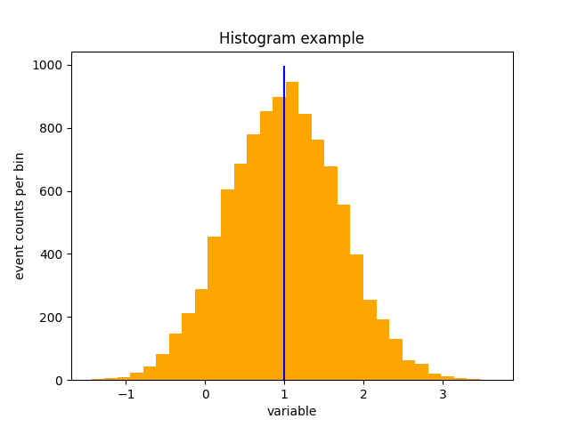

3. Data Visualisation with Python#
3.1. Reading and writing text files with Python#
It is frequently useful to save data on text files and to be able to recover them for a later use, either to avoid inserting them one by one during a script execution, or to have them saved in a separate place with respect to the script source code.
3.1.1. Writing information on txt files#
The writing procedure may be done in the following way:
with open ('sample.txt', 'w') as output_file : for item in sample: # write each item on a new line output_file.write (str (item) + '\n')
The
samplevariable is an existing collection of numbersthe printout adds a carriage return symbol
\n, so to ensure that the numbers are saved in different lines
3.1.2. Reading information from txt files#
The reading procedure may be done in the following way:
with open (sys.argv[1]) as input_file: sample = [float (x) for x in input_file.readlines()]
The
samplevariabile gets created while reading the text fileThe
readlines ()function returns strings, which need to be converted into floats for them to be used as sample elements
3.2. Histograms#
Histograms are a representation of differential distributions, constructed from a sample of numbers, which we call events
We start with a sample of events {xi}i=1,..,N
An example of a sample of events is the set of measurements collected during an experiment, or a sequence of pseudo-random numbers
3.2.1. Histogram Bins#
For a random variable of interest x, its interval of definition is divided into adjacent and disjoint sub-intervals delimited by {xk}
The k-th interval is bounded between xk and xk+1
Usually, these intervals are called bins
An histogram is the collection of event counts that fall within each interval
The visualization of a one-dimensional histogram typically shows:
On the horizontal axis, the interval of definition of the variable x
On the vertical axis, the counts corresponding to each bin
Above each bin, a vertical bar as high as the counts in the bin
3.2.2. One-Dimensional Histograms and Probability Density Distributions#
As the bin size approaches infinitesimal, an histogram becomes a continuous function

If the content of each bin is divided by the total number of events N, this function becomes normalized, thus an histogram approximates a probability density distribution
3.2.3. Histogram building and representation in matplotlib#
Given a sample of numbers, its visualisation in a histogram form may be obtained with the following instructions:
fig, ax = plt.subplots (nrows = 1, ncols = 1) ax.hist (sample, color = 'orange', )
where the input
sampleis a collection of valuesThe x axis range and its division into bins is automtically performed by the
histfunction
3.2.4. Histogram drawing options control#
Very frequenly – always in this course – one wants to have control over the x axis range and binning, for a proper statistical use of the histogram and for comparisons across histograms.
This may be achieved by explicitly defining the bin boundaries and providing them as input with the
histfunction:bin_edges = np.linspace (xMin, xMax, N_bins) print ('length of the bin_edges container:', len (bin_edges)) fig, ax = plt.subplots (nrows = 1, ncols = 1) ax.hist (sample, bins = bin_edges, color = 'orange', )
3.2.5. The number of bins#
Depending on the sample size, the number of bins shall be adapted:
on the one hand, with more events it may be increased, with very few events it has to remain small to gather at least some events per bin
on the other hand, it’s of no use that the size of each bin is much smaller than the typical shape changes in the histogram
The choice of
N_binsis therefore relevant for a proper representation: a recipe frequently used is the so-called Sturges’ rule:from math import ceil def sturges (N_events) : return ceil (1 + 3.322 * np.log (N_events))
which may be used as follows in the drawing instructions:
N_bins = sturges (len (sample)) bin_edges = np.linspace (xMin, xMax, N_bins)
3.2.6. Logarithmic scales#
When the values in different bins change considerably, it can be convenient to visualize histograms on a logarithmic scale (along the horizontal or vertical axis), to improve the readability of the result
Being a different visualization of the same content, this operation is performed using a method of the
axesobjectax.set_ylabel ('y')
Clearly, the zero of the logarithmic scale axis cannot appear in the images
3.3. Calculate and draw sample moments#
Given the sample, its moments may be calculated by replacing expectation values with sample averages, for example: $\( E[x] = \int_{-\infty}^\infty x\:f(x)\:dx ~ \to ~ \sum^N_{i=1} x_i / N \)$
The corresponding
pythonscript to implement this call is then:return sum (sample) / len (sample)
the
pythonfunctionsumcalculates the sum of thesampleelementsthe
pythonfunctionlencalculates its number of elements
once the average is known, its drawing may be added to a histogram:
ax.hist (sample, bins = bin_edges, color = 'orange', ) vertical_limits = ax.get_ylim () ax.plot ([sample_mean, sample_mean], vertical_limits, color = 'blue')
to obtain the following visualisation 
3.4. Data models#
Notable probability density function distributions exist in a pre-implemented for in the
SciPylibrary, which provides algorithms and data structures for scientific computing.The full list of available models may be found here
All continuous distributions take
locandscaleas keyword parameters to adjust the location and scale of the distributionfor the standard normal distribution, the
locis the mean and thescaleis the standard deviation
3.4.1. Using a continuous probability density function#
A pdf object needs to be imported from the SciPy library to be used, as for example for the Gaussian distribution:
from scipy.stats import norm
The actual values of the pdf may be accessed through the
pdffunction:mean = 1. sigma = 0.5 x = mean + sigma / 2. print (norm.pdf (x, mean, sigma))
The values of the input parameters may be frozen once and for all:
norm_fix = norm (mean, sigma) print (norm_fix.pdf (mean))
3.4.2. The cumulative density function#
The function
cdfgives access to the cumulative density function of the model, for example in the case of a Gaussian distribution:print ('the value of the Gaussian distribution cumulative at its mean is: ' + str (norm.cdf (mean, mean, sigma)) )
3.4.3. Distribution momenta#
The pdf objects provide functions for the calculation of their momenta:
ave, var, skew, kurt = norm_fix.stats (moments='mvsk') print (ave, var, skew, kurt)
3.5. Function integration#
The SciPy library also contains a module dedicated to numerical integration of functions
3.5.1. Definite integral#
The function
quadcalculates definite integrals given the function and the integration rangefrom scipy.integrate import quad # definition of a polinomial function polin = lambda x : x**2 + x + 1 area = quad (polin, 0., 4.) print ('area = ', area[0]) print ('absolute error estimate = ', area[1])
The
quadfunction returns both the integral value and an estimate of the absolute error on the integral
3.5.2. Integration over infinite ranges#
The
quadfunction works with infinity extremes, which can be expressed thanks to the numpy objectnp.inf:def expon (x) : return exp (-1 * x) #... area = quad (expon, 0, np.inf)